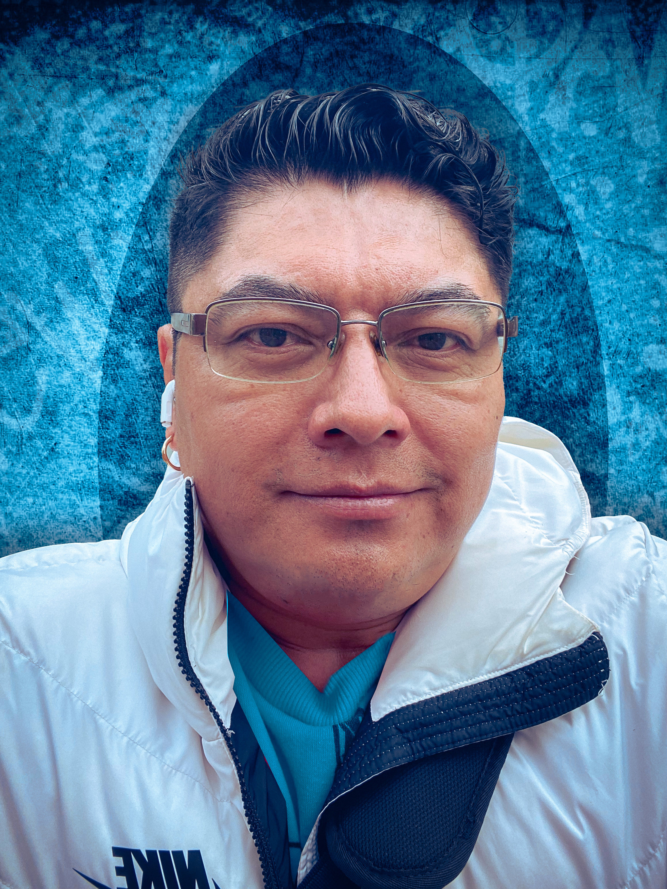

"Detail-oriented and highly motivated junior web developer, eager to contribute technical skills and creativity to a dynamic team. Committed to staying current with industry trends and continuously expanding knowledge in web development."

Education
- ARTS AND DESIGN • 2016-2018 • GEORGE BROWN COLLEGE
- GRAPHIC DESIGN • 2020-2022 •GEORGE BROWN COLLEGE
- Understands the principles and theory of excellent design, such as: contrast, balance, emphasis, proportion, hierarchy, repetition, rhythm, pattern, white space, movement, variety, and unity.
- Studied color theory and understands its importance in order to create meaningful designs.
- Proficient Photoshop, Illustrator, Adobe Draw, Indesign, Microsoft365, Adobe AE,
- Successfully completed a training program in Photography.
See my hobbies and other interests here..
Contact me